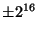
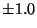
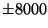

Vorbis is a great project but its goals are not the same as Speex. Vorbis is mostly aimed at compressing music and audio in general, while Speex targets speech only. For that reason Speex can achieve much better results than Vorbis on speech, typically 2-4 times higher compression at equal quality.
Ogg is a ``file format'' for holding multimedia data. Vorbis is an audio codec that uses Ogg to store its bit-streams as files, hence the name Ogg Vorbis. Speex also uses the Ogg format to store its bit-streams as files, so technically they would be ``Ogg Speex'' files (I prefer to call them just Speex files). One difference with Vorbis however, is that Speex is less tied with Ogg. Actually, if what you do is Voice of IP (VoIP), you don't need Ogg at all.
Just like Vorbis is not really adapted to speech, Speex is really not adapted for music. In most cases, you'll be better of with Vorbis when it comes to music.
This is called transcoding and it will always result in much poorer quality than the original MP3. Unless you have a really good (size) reason to do so, never transcode speech. This is even valid for self transcoding (tandeming), i.e. If you decode a Speex file and re-encode it again at the same bit-rate, you will lose quality.
As of 0.8.0, Speex can now compile on Windows, though limited testing has been done so far.
For most kinds of compression, encoding is inherently slower than decoding. In the case of Speex, encoding consists of finding, for each vector of 5 to 10 samples, the entry that matches the best within a codebook consisting of 16 to 256 entries. On the other hand, at decoding all that needs to be done is lookup the right entry in the codebook using the encoded index. Since a lookup is much faster than a search, the decoder works much faster than the encoder.
Well the parenthesis provides the answer: no FPU (floating-point unit). The Speex code makes heavy use of floating-point operations. On devices with no FPU, all floating-point instructions need to be emulated. This is a very time consuming operation.
One of the cause could be scaling of the input speech. Speex expects signals to have a

(signed short) dynamic range. If the dynamic range of your signals is too small (e.g.
), you will suffer important quantization noise. A good target is to have a dynamic range around
which is large enough, but small enough to make sure there's no clipping when converting back to signed short.
There are many possible causes for that. One of them is errors in the way the bits are manipulated. Another possible cause is the use of the same encoder or decoder state for more than one audio stream (channel), which produces strange effects with the filter memories. If the input speech has an amplitude close to , it is possible that at decoding, the amplitude be a bit higher than that, causing clipping when saving as 16-bit PCM.
I guess it all depends on the bit-rate used. Though no formal testing has yet been performed, I'd say don't go below the 15 kbps mode if you want DTMF to be transmitted correctly. Also, make sure you don't use the lowest complexity (see SPEEX_SET_COMPLEXITY or -comp option), as it causes important noise.
If I could to that I'd be very rich by now :-)
I am currently (2002/08/13) doing a Ph.D. at the University of Sherbrooke in mobile robotics. Although I did my master with the Sherbrooke speech coding group (in speech enhancement, not coding), I am not associated with them anymore. It should not be understood that they or the University of Sherbrooke endorse the Speex project in any way. Furthermore, Speex does not make use of any code or proprietary technology developed in the Sherbrooke speech coding group.
CELP stands for ``Code Excited Linear Prediction'', while ACELP stands for ``Algebraic Code Excited Linear Prediction''. That means ACELP is a CELP technique that uses an algebraic codebook represented as a sum of unit pulses, thus making the codebook search much more efficient. This technique was invented at the University of Sherbrooke and is now one of the most widely used form of CELP. Unfortunately, since it is patented, it cannot be used in Speex.